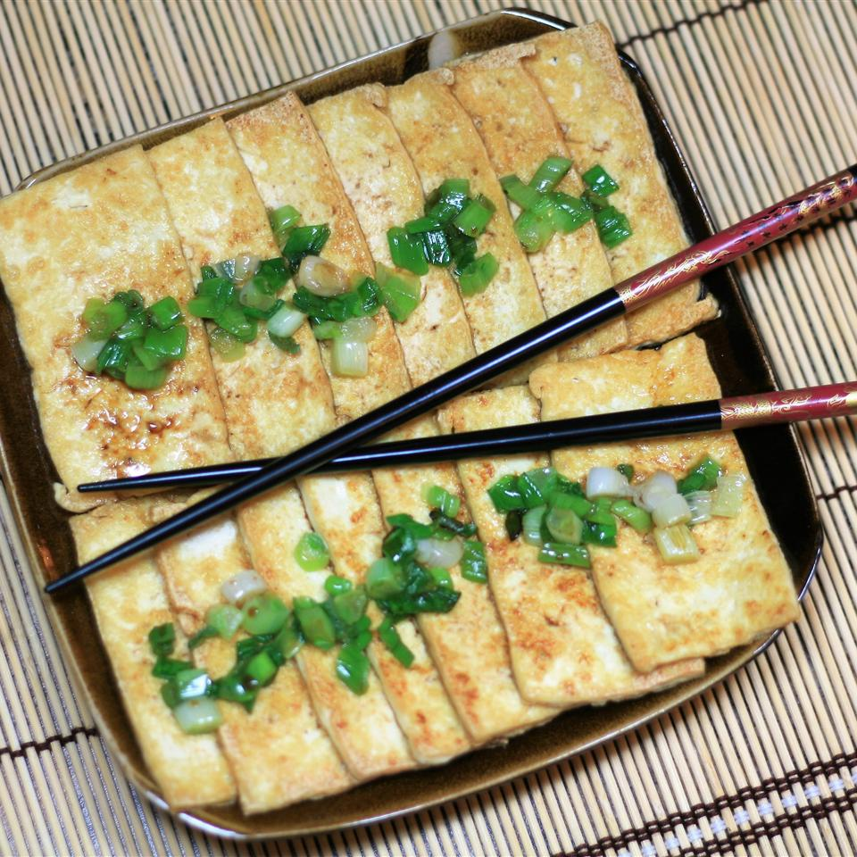

Pan Fried Tofu

Description
A simple to make everyday dish that originates from Hong Kong
It pairs nicely with soy sauce and rice.
Ingredients
- 1 (12 ounce) package extra-firm tofu
- 2 tablespoons vegetable oil, divided
- 1/4 cup chopped green onions
- 2 tablespoons soy sauce
Steps
- Place tofu onto a plate and place another plate
on top. Set a 3 to 5 pound weight on top. Press
tofu for 20 to 30 minutes; drain and discard the
accumulated liquid.
- Cut tofu into 2x4-inch strips about 1/4-inch thick.
- Heat 1 tablespoon oil in large skillet over
medium-low heat. Cook tofu strips in the oil until
golden brown, 2 to 3 minutes per side. Stack tofu
strips horizontally in a dish with sloping sides,
like a teacup saucer.
- Heat remaining 1 tablespoon oil in the same skillet.
Add green onions; cook and stir until fragrant,
10 to 20 seconds. Spoon green onions over tofu
while they are still sizzling. Coat with soy sauce.
Let sit until tofu soaks up flavors, 3 to 5 minutes.